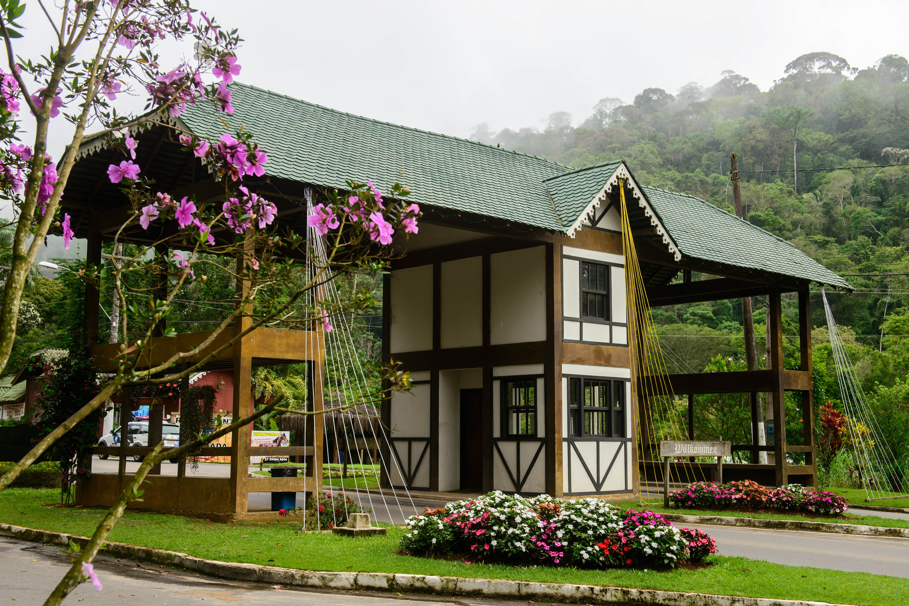

Domingos Martins é conhecido como Cidade do Verde por manter preservada parte da sua flora e pela exuberância da Mata Atlântica.

Para você conhecer mais sobre a cidade de Domingos Martins, clique aqui para baixar um documento de Domingos Martins.
Clique aqui para baixar um guia turístico da cidade de Domingos Martins.
Clique aqui para baixar um zip ambos arquivos.